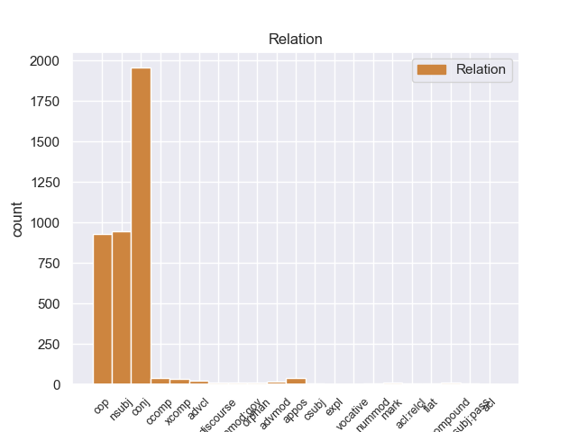
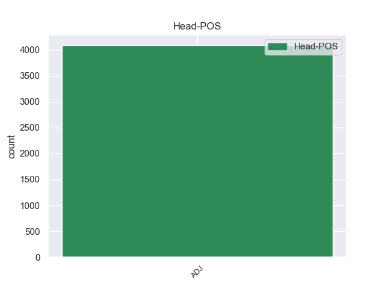
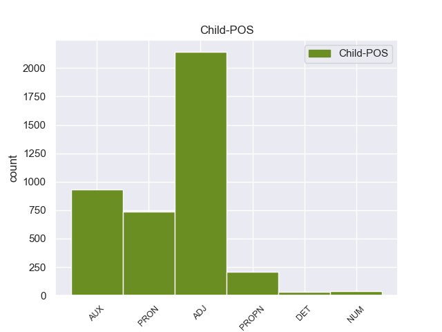

Distribution of features within this leaf



Agreement Rules sorted by frequency.
- When the dependent token is the conjunct(conj) of the head token, and the head token is ADJ and the dependent token is ADJ.
1 - _ _ _ _ 0 _ _ _
2 У _ _ _ _ 0 _ _ _
3 него _ _ _ _ 0 _ _ _
4 был _ _ _ _ 0 _ _ _
5 вежливый вежливый ADJ _ Case=Nom|Degree=Pos|Gender=Masc|Number=Sing 0 _ _ _
6 , _ _ _ _ 0 _ _ _
7 мягкий _ _ _ _ 0 _ _ _
8 и _ _ _ _ 0 _ _ _
9 терпеливый терпеливый ADJ _ Case=Nom|Degree=Pos|Gender=Masc|Number=Sing 5 conj 5:conj _
10 голос _ _ _ _ 0 _ _ _
11 . _ _ _ _ 0 _ _ _
1 Загадочен загадочный ADJ _ Degree=Pos|Gender=Masc|Number=Sing|Variant=Short 0 _ _ _
2 был быть AUX _ Aspect=Imp|Gender=Masc|Mood=Ind|Number=Sing|Tense=Past|VerbForm=Fin|Voice=Act 1 cop 1:cop _
3 этот _ _ _ _ 0 _ _ _
4 светлый _ _ _ _ 0 _ _ _
5 , _ _ _ _ 0 _ _ _
6 чистый _ _ _ _ 0 _ _ _
7 березовый _ _ _ _ 0 _ _ _
8 и _ _ _ _ 0 _ _ _
9 осиновый _ _ _ _ 0 _ _ _
10 лесок _ _ _ _ 0 _ _ _
11 , _ _ _ _ 0 _ _ _
12 выкроивший _ _ _ _ 0 _ _ _
13 себе _ _ _ _ 0 _ _ _
14 немалую _ _ _ _ 0 _ _ _
15 площадь _ _ _ _ 0 _ _ _
16 посреди _ _ _ _ 0 _ _ _
17 ольшаника _ _ _ _ 0 _ _ _
18 . _ _ _ _ 0 _ _ _
1 - _ _ _ _ 0 _ _ _
2 Но _ _ _ _ 0 _ _ _
3 раз _ _ _ _ 0 _ _ _
4 ее _ _ _ _ 0 _ _ _
5 забросили _ _ _ _ 0 _ _ _
6 , _ _ _ _ 0 _ _ _
7 значит _ _ _ _ 0 _ _ _
8 , _ _ _ _ 0 _ _ _
9 она она PRON _ Case=Nom|Gender=Fem|Number=Sing|Person=3 11 nsubj 11:nsubj _
10 не _ _ _ _ 0 _ _ _
11 нужна нужный ADJ _ Degree=Pos|Gender=Fem|Number=Sing|Variant=Short 0 _ _ _
12 ? _ _ _ _ 0 _ _ _
1 Павлов Павлов PROPN _ Animacy=Anim|Case=Nom|Gender=Masc|Number=Sing 2 nsubj 2:nsubj _
2 готов готовый ADJ _ Degree=Pos|Gender=Masc|Number=Sing|Variant=Short 0 _ _ _
3 был _ _ _ _ 0 _ _ _
4 восторгаться _ _ _ _ 0 _ _ _
5 рыцарственным _ _ _ _ 0 _ _ _
6 служением _ _ _ _ 0 _ _ _
7 близнецов _ _ _ _ 0 _ _ _
8 своей _ _ _ _ 0 _ _ _
9 мечте _ _ _ _ 0 _ _ _
10 , _ _ _ _ 0 _ _ _
11 будь _ _ _ _ 0 _ _ _
12 эта _ _ _ _ 0 _ _ _
13 мечта _ _ _ _ 0 _ _ _
14 достижимой _ _ _ _ 0 _ _ _
15 . _ _ _ _ 0 _ _ _
1 Кроме _ _ _ _ 0 _ _ _
2 того _ _ _ _ 0 _ _ _
3 , _ _ _ _ 0 _ _ _
4 такой _ _ _ _ 0 _ _ _
5 адсорбент _ _ _ _ 0 _ _ _
6 должен должен ADJ _ Degree=Pos|Gender=Masc|Number=Sing|Variant=Short 0 _ _ _
7 быть _ _ _ _ 0 _ _ _
8 дешевым дешевый ADJ _ Case=Ins|Degree=Pos|Gender=Masc|Number=Sing 6 xcomp 6:xcomp SpaceAfter=No
9 , _ _ _ _ 0 _ _ _
10 он _ _ _ _ 0 _ _ _
11 должен _ _ _ _ 0 _ _ _
12 сопротивляться _ _ _ _ 0 _ _ _
13 действию _ _ _ _ 0 _ _ _
14 соленой _ _ _ _ 0 _ _ _
15 воды _ _ _ _ 0 _ _ _
16 , _ _ _ _ 0 _ _ _
17 биологических _ _ _ _ 0 _ _ _
18 обрастаний _ _ _ _ 0 _ _ _
19 , _ _ _ _ 0 _ _ _
20 должен _ _ _ _ 0 _ _ _
21 хорошо _ _ _ _ 0 _ _ _
22 выдерживать _ _ _ _ 0 _ _ _
23 химическую _ _ _ _ 0 _ _ _
24 обработку _ _ _ _ 0 _ _ _
25 , _ _ _ _ 0 _ _ _
26 чтобы _ _ _ _ 0 _ _ _
27 после _ _ _ _ 0 _ _ _
28 извлечения _ _ _ _ 0 _ _ _
29 накопленного _ _ _ _ 0 _ _ _
30 металла _ _ _ _ 0 _ _ _
31 его _ _ _ _ 0 _ _ _
32 можно _ _ _ _ 0 _ _ _
33 было _ _ _ _ 0 _ _ _
34 бы _ _ _ _ 0 _ _ _
35 снова _ _ _ _ 0 _ _ _
36 вернуть _ _ _ _ 0 _ _ _
37 в _ _ _ _ 0 _ _ _
38 море _ _ _ _ 0 _ _ _
39 . _ _ _ _ 0 _ _ _
1 К _ _ _ _ 0 _ _ _
2 депутатской _ _ _ _ 0 _ _ _
3 деятельности _ _ _ _ 0 _ _ _
4 он _ _ _ _ 0 _ _ _
5 должен _ _ _ _ 0 _ _ _
6 быть _ _ _ _ 0 _ _ _
7 подготовлен _ _ _ _ 0 _ _ _
8 всей _ _ _ _ 0 _ _ _
9 своей _ _ _ _ 0 _ _ _
10 предшествующей _ _ _ _ 0 _ _ _
11 работой _ _ _ _ 0 _ _ _
12 : _ _ _ _ 0 _ _ _
13 государственной _ _ _ _ 0 _ _ _
14 , _ _ _ _ 0 _ _ _
15 профессиональной _ _ _ _ 0 _ _ _
16 , _ _ _ _ 0 _ _ _
17 общественной общественный ADJ _ Case=Ins|Degree=Pos|Gender=Fem|Number=Sing 0 _ _ _
18 ( _ _ _ _ 0 _ _ _
19 партийной партийный ADJ _ Case=Ins|Degree=Pos|Gender=Fem|Number=Sing 17 appos 17:appos SpaceAfter=No
20 , _ _ _ _ 0 _ _ _
21 профсоюзной _ _ _ _ 0 _ _ _
22 и _ _ _ _ 0 _ _ _
23 т. _ _ _ _ 0 _ _ _
24 д _ _ _ _ 0 _ _ _
25 ) _ _ _ _ 0 _ _ _
26 . _ _ _ _ 0 _ _ _
1 Я _ _ _ _ 0 _ _ _
2 думаю _ _ _ _ 0 _ _ _
3 , _ _ _ _ 0 _ _ _
4 что _ _ _ _ 0 _ _ _
5 этот _ _ _ _ 0 _ _ _
6 вопрос _ _ _ _ 0 _ _ _
7 в _ _ _ _ 0 _ _ _
8 данном _ _ _ _ 0 _ _ _
9 случае _ _ _ _ 0 _ _ _
10 не _ _ _ _ 0 _ _ _
11 правомерен _ _ _ _ 0 _ _ _
12 : _ _ _ _ 0 _ _ _
13 родной родной ADJ _ Case=Nom|Degree=Pos|Gender=Masc|Number=Sing 16 nsubj 16:nsubj _
14 - _ _ _ _ 0 _ _ _
15 это _ _ _ _ 0 _ _ _
16 родной родной ADJ _ Case=Nom|Degree=Pos|Gender=Masc|Number=Sing 0 _ _ _
17 ( _ _ _ _ 0 _ _ _
18 как _ _ _ _ 0 _ _ _
19 мать _ _ _ _ 0 _ _ _
20 , _ _ _ _ 0 _ _ _
21 отец _ _ _ _ 0 _ _ _
22 , _ _ _ _ 0 _ _ _
23 Родина _ _ _ _ 0 _ _ _
24 ) _ _ _ _ 0 _ _ _
25 , _ _ _ _ 0 _ _ _
26 а _ _ _ _ 0 _ _ _
27 приобретенный _ _ _ _ 0 _ _ _
28 - _ _ _ _ 0 _ _ _
29 для _ _ _ _ 0 _ _ _
30 дела _ _ _ _ 0 _ _ _
31 , _ _ _ _ 0 _ _ _
32 для _ _ _ _ 0 _ _ _
33 жизни _ _ _ _ 0 _ _ _
34 , _ _ _ _ 0 _ _ _
35 для _ _ _ _ 0 _ _ _
36 общения _ _ _ _ 0 _ _ _
37 с _ _ _ _ 0 _ _ _
38 людьми _ _ _ _ 0 _ _ _
39 других _ _ _ _ 0 _ _ _
40 национальностей _ _ _ _ 0 _ _ _
41 . _ _ _ _ 0 _ _ _
1 Ясно ясный ADJ _ Degree=Pos|Gender=Neut|Number=Sing|Variant=Short 0 _ _ _
2 одно один DET _ Case=Nom|Degree=Pos|Gender=Neut|Number=Sing 1 nsubj 1:nsubj _
3 - _ _ _ _ 0 _ _ _
4 развивающиеся _ _ _ _ 0 _ _ _
5 страны _ _ _ _ 0 _ _ _
6 находятся _ _ _ _ 0 _ _ _
7 в _ _ _ _ 0 _ _ _
8 трудной _ _ _ _ 0 _ _ _
9 ситуации _ _ _ _ 0 _ _ _
10 , _ _ _ _ 0 _ _ _
11 обусловленной _ _ _ _ 0 _ _ _
12 факторами _ _ _ _ 0 _ _ _
13 как _ _ _ _ 0 _ _ _
14 внутреннего _ _ _ _ 0 _ _ _
15 , _ _ _ _ 0 _ _ _
16 так _ _ _ _ 0 _ _ _
17 и _ _ _ _ 0 _ _ _
18 внешнего _ _ _ _ 0 _ _ _
19 характера _ _ _ _ 0 _ _ _
20 . _ _ _ _ 0 _ _ _
1 Ясно ясный ADJ _ Degree=Pos|Gender=Neut|Number=Sing|Variant=Short 0 _ _ _
2 , _ _ _ _ 0 _ _ _
3 что _ _ _ _ 0 _ _ _
4 разобраться _ _ _ _ 0 _ _ _
5 за _ _ _ _ 0 _ _ _
6 такой _ _ _ _ 0 _ _ _
7 срок _ _ _ _ 0 _ _ _
8 , _ _ _ _ 0 _ _ _
9 кто _ _ _ _ 0 _ _ _
10 в _ _ _ _ 0 _ _ _
11 этой _ _ _ _ 0 _ _ _
12 четверти _ _ _ _ 0 _ _ _
13 миллиона _ _ _ _ 0 _ _ _
14 , _ _ _ _ 0 _ _ _
15 а _ _ _ _ 0 _ _ _
16 может _ _ _ _ 0 _ _ _
17 быть _ _ _ _ 0 _ _ _
18 , _ _ _ _ 0 _ _ _
19 даже _ _ _ _ 0 _ _ _
20 вне _ _ _ _ 0 _ _ _
21 ее _ _ _ _ 0 _ _ _
22 , _ _ _ _ 0 _ _ _
23 лучше _ _ _ _ 0 _ _ _
24 всего _ _ _ _ 0 _ _ _
25 способен _ _ _ _ 0 _ _ _
26 представить _ _ _ _ 0 _ _ _
27 интересы _ _ _ _ 0 _ _ _
28 территории _ _ _ _ 0 _ _ _
29 в _ _ _ _ 0 _ _ _
30 высшем _ _ _ _ 0 _ _ _
31 органе _ _ _ _ 0 _ _ _
32 власти _ _ _ _ 0 _ _ _
33 , _ _ _ _ 0 _ _ _
34 нелегко нелегкий ADJ _ Degree=Pos|Gender=Neut|Number=Sing|Variant=Short 1 ccomp 1:ccomp SpaceAfter=No
35 . _ _ _ _ 0 _ _ _
1 Но _ _ _ _ 0 _ _ _
2 через _ _ _ _ 0 _ _ _
3 какое-то _ _ _ _ 0 _ _ _
4 время _ _ _ _ 0 _ _ _
5 раздался _ _ _ _ 0 _ _ _
6 взрыв _ _ _ _ 0 _ _ _
7 , _ _ _ _ 0 _ _ _
8 все _ _ _ _ 0 _ _ _
9 заполыхало _ _ _ _ 0 _ _ _
10 , _ _ _ _ 0 _ _ _
11 и _ _ _ _ 0 _ _ _
12 взрывы _ _ _ _ 0 _ _ _
13 стали _ _ _ _ 0 _ _ _
14 следовать _ _ _ _ 0 _ _ _
15 один один NUM _ Case=Nom|Gender=Masc 17 nummod:gov 17:nummod:gov _
16 за _ _ _ _ 0 _ _ _
17 другим другой ADJ _ Case=Ins|Degree=Pos|Gender=Masc|Number=Sing 0 _ _ _
18 . _ _ _ _ 0 _ _ _
1 В _ _ _ _ 0 _ _ _
2 компании _ _ _ _ 0 _ _ _
3 Symantec _ _ _ _ 0 _ _ _
4 заявляют _ _ _ _ 0 _ _ _
5 , _ _ _ _ 0 _ _ _
6 что _ _ _ _ 0 _ _ _
7 " _ _ _ _ 0 _ _ _
8 это _ _ _ _ 0 _ _ _
9 необходимо необходимый ADJ _ Degree=Pos|Gender=Neut|Number=Sing|Variant=Short 0 _ _ _
10 , _ _ _ _ 0 _ _ _
11 так _ _ _ _ 0 _ _ _
12 как _ _ _ _ 0 _ _ _
13 нелегко нелегкий ADJ _ Degree=Pos|Gender=Neut|Number=Sing|Variant=Short 9 advcl 9:advcl _
14 придумать _ _ _ _ 0 _ _ _
15 уникальное _ _ _ _ 0 _ _ _
16 имя _ _ _ _ 0 _ _ _
17 новому _ _ _ _ 0 _ _ _
18 вирусу _ _ _ _ 0 _ _ _
19 при _ _ _ _ 0 _ _ _
20 наличии _ _ _ _ 0 _ _ _
21 58 _ _ _ _ 0 _ _ _
22 тысяч _ _ _ _ 0 _ _ _
23 вредоносных _ _ _ _ 0 _ _ _
24 программ _ _ _ _ 0 _ _ _
25 в _ _ _ _ 0 _ _ _
26 базе _ _ _ _ 0 _ _ _
27 " _ _ _ _ 0 _ _ _
28 . _ _ _ _ 0 _ _ _
1 Одно один NUM _ Case=Nom|Gender=Neut 2 nsubj 2:nsubj _
2 плохо плохой ADJ _ Degree=Pos|Gender=Neut|Number=Sing|Variant=Short 0 _ _ _
3 - _ _ _ _ 0 _ _ _
4 всегда _ _ _ _ 0 _ _ _
5 мешало _ _ _ _ 0 _ _ _
6 трение _ _ _ _ 0 _ _ _
7 . _ _ _ _ 0 _ _ _
1 " _ _ _ _ 0 _ _ _
2 Да _ _ _ _ 0 _ _ _
3 , _ _ _ _ 0 _ _ _
4 - _ _ _ _ 0 _ _ _
5 усмехнулся _ _ _ _ 0 _ _ _
6 Монахов _ _ _ _ 0 _ _ _
7 , _ _ _ _ 0 _ _ _
8 - _ _ _ _ 0 _ _ _
9 жена _ _ _ _ 0 _ _ _
10 - _ _ _ _ 0 _ _ _
11 это _ _ _ _ 0 _ _ _
12 не _ _ _ _ 0 _ _ _
13 прошлое _ _ _ _ 0 _ _ _
14 , _ _ _ _ 0 _ _ _
15 жена _ _ _ _ 0 _ _ _
16 - _ _ _ _ 0 _ _ _
17 это _ _ _ _ 0 _ _ _
18 самое самый ADJ _ Case=Nom|Degree=Pos|Gender=Neut|Number=Sing 0 _ _ _
19 что что PRON _ Animacy=Inan|Case=Nom|Gender=Neut|Number=Sing 18 advmod 18:advmod _
20 ни _ _ _ _ 0 _ _ _
21 на _ _ _ _ 0 _ _ _
22 есть _ _ _ _ 0 _ _ _
23 настоящее _ _ _ _ 0 _ _ _
24 … _ _ _ _ 0 _ _ _
25 " _ _ _ _ 0 _ _ _
1 Нужно _ _ _ _ 0 _ _ _
2 отказаться _ _ _ _ 0 _ _ _
3 от _ _ _ _ 0 _ _ _
4 навешивания _ _ _ _ 0 _ _ _
5 ярлыков _ _ _ _ 0 _ _ _
6 , _ _ _ _ 0 _ _ _
7 когда _ _ _ _ 0 _ _ _
8 под _ _ _ _ 0 _ _ _
9 формальным _ _ _ _ 0 _ _ _
10 обязательно _ _ _ _ 0 _ _ _
11 понимают _ _ _ _ 0 _ _ _
12 засушенное _ _ _ _ 0 _ _ _
13 , _ _ _ _ 0 _ _ _
14 казенное _ _ _ _ 0 _ _ _
15 , _ _ _ _ 0 _ _ _
16 неинтересное _ _ _ _ 0 _ _ _
17 , _ _ _ _ 0 _ _ _
18 а _ _ _ _ 0 _ _ _
19 под _ _ _ _ 0 _ _ _
When the dependent token is the numeric modifier(nummod) of the head token, and the head token is ADJ and the dependent token is NUM.
1 Прокурора _ _ _ _ 0 _ _ _
2 это _ _ _ _ 0 _ _ _
3 заявление _ _ _ _ 0 _ _ _
4 ( _ _ _ _ 0 _ _ _
5 а _ _ _ _ 0 _ _ _
6 также _ _ _ _ 0 _ _ _
7 тот _ _ _ _ 0 _ _ _
8 факт _ _ _ _ 0 _ _ _
9 , _ _ _ _ 0 _ _ _
10 что _ _ _ _ 0 _ _ _
11 ни _ _ _ _ 0 _ _ _
12 у _ _ _ _ 0 _ _ _
13 одного один NUM _ Case=Gen|Gender=Masc 14 nummod 14:nummod _
14 подопытного подопытный ADJ _ Case=Gen|Degree=Pos|Gender=Masc|Number=Sing 0 _ _ _
15 проба _ _ _ _ 0 _ _ _
16 не _ _ _ _ 0 _ _ _
17 вызвала _ _ _ _ 0 _ _ _
18 болезненных _ _ _ _ 0 _ _ _
19 последствий _ _ _ _ 0 _ _ _
20 ) _ _ _ _ 0 _ _ _
21 удовлетворило _ _ _ _ 0 _ _ _
22 , _ _ _ _ 0 _ _ _
23 и _ _ _ _ 0 _ _ _
24 дело _ _ _ _ 0 _ _ _
25 возбуждать _ _ _ _ 0 _ _ _
26 не _ _ _ _ 0 _ _ _
27 стали _ _ _ _ 0 _ _ _
28 . _ _ _ _ 0 _ _ _
When the dependent token is the relative clause modifier(acl:relcl) of the head token, and the head token is ADJ and the dependent token is ADJ.
1 Общее общий ADJ _ Case=Nom|Degree=Pos|Gender=Neut|Number=Sing 0 _ _ _
2 , _ _ _ _ 0 _ _ _
3 что _ _ _ _ 0 _ _ _
4 характерно характерный ADJ _ Degree=Pos|Gender=Neut|Number=Sing|Variant=Short 1 acl:relcl 1:acl:relcl _
5 для _ _ _ _ 0 _ _ _
6 истории _ _ _ _ 0 _ _ _
7 конца _ _ _ _ 0 _ _ _
8 XX _ _ _ _ 0 _ _ _
9 века _ _ _ _ 0 _ _ _
10 , _ _ _ _ 0 _ _ _
11 - _ _ _ _ 0 _ _ _
12 глобализация _ _ _ _ 0 _ _ _
13 социальной _ _ _ _ 0 _ _ _
14 , _ _ _ _ 0 _ _ _
15 экономической _ _ _ _ 0 _ _ _
16 и _ _ _ _ 0 _ _ _
17 политической _ _ _ _ 0 _ _ _
18 жизни _ _ _ _ 0 _ _ _
19 народов _ _ _ _ 0 _ _ _
20 , _ _ _ _ 0 _ _ _
21 наряду _ _ _ _ 0 _ _ _
22 с _ _ _ _ 0 _ _ _
23 этим _ _ _ _ 0 _ _ _
24 - _ _ _ _ 0 _ _ _
25 глобализация _ _ _ _ 0 _ _ _
26 опасностей _ _ _ _ 0 _ _ _
27 , _ _ _ _ 0 _ _ _
28 грозящих _ _ _ _ 0 _ _ _
29 человеческому _ _ _ _ 0 _ _ _
30 роду _ _ _ _ 0 _ _ _
31 . _ _ _ _ 0 _ _ _
When the dependent token is the flat multiword expression(flat) of the head token, and the head token is ADJ and the dependent token is ADJ.
1 - _ _ _ _ 0 _ _ _
2 А _ _ _ _ 0 _ _ _
3 голова _ _ _ _ 0 _ _ _
4 у _ _ _ _ 0 _ _ _
5 нее _ _ _ _ 0 _ _ _
6 красная красный ADJ _ Case=Nom|Degree=Pos|Gender=Fem|Number=Sing 0 _ _ _
7 - _ _ _ _ 0 _ _ _
8 красная красный ADJ _ Case=Nom|Degree=Pos|Gender=Fem|Number=Sing 6 flat 6:flat SpaceAfter=No
9 , _ _ _ _ 0 _ _ _
10 так _ _ _ _ 0 _ _ _
11 и _ _ _ _ 0 _ _ _
12 горит _ _ _ _ 0 _ _ _
13 ! _ _ _ _ 0 _ _ _
14 - _ _ _ _ 0 _ _ _
15 пылко _ _ _ _ 0 _ _ _
16 вскричал _ _ _ _ 0 _ _ _
17 младший _ _ _ _ 0 _ _ _
18 . _ _ _ _ 0 _ _ _
When the dependent token is the passive nominal subject(nsubj:pass) of the head token, and the head token is ADJ and the dependent token is PRON.
1 К _ _ _ _ 0 _ _ _
2 депутатской _ _ _ _ 0 _ _ _
3 деятельности _ _ _ _ 0 _ _ _
4 он он PRON _ Case=Nom|Gender=Masc|Number=Sing|Person=3 5 nsubj:pass 5:nsubj:pass _
5 должен должен ADJ _ Degree=Pos|Gender=Masc|Number=Sing|Variant=Short 0 _ _ _
6 быть _ _ _ _ 0 _ _ _
7 подготовлен _ _ _ _ 0 _ _ _
8 всей _ _ _ _ 0 _ _ _
9 своей _ _ _ _ 0 _ _ _
10 предшествующей _ _ _ _ 0 _ _ _
11 работой _ _ _ _ 0 _ _ _
12 : _ _ _ _ 0 _ _ _
13 государственной _ _ _ _ 0 _ _ _
14 , _ _ _ _ 0 _ _ _
15 профессиональной _ _ _ _ 0 _ _ _
16 , _ _ _ _ 0 _ _ _
17 общественной _ _ _ _ 0 _ _ _
18 ( _ _ _ _ 0 _ _ _
19 партийной _ _ _ _ 0 _ _ _
20 , _ _ _ _ 0 _ _ _
21 профсоюзной _ _ _ _ 0 _ _ _
22 и _ _ _ _ 0 _ _ _
23 т. _ _ _ _ 0 _ _ _
24 д _ _ _ _ 0 _ _ _
25 ) _ _ _ _ 0 _ _ _
26 . _ _ _ _ 0 _ _ _
When the dependent token is the compound(compound) of the head token, and the head token is ADJ and the dependent token is ADJ.
1 У _ _ _ _ 0 _ _ _
2 нас _ _ _ _ 0 _ _ _
3 , _ _ _ _ 0 _ _ _
4 к _ _ _ _ 0 _ _ _
5 сожалению _ _ _ _ 0 _ _ _
6 , _ _ _ _ 0 _ _ _
7 не _ _ _ _ 0 _ _ _
8 принято _ _ _ _ 0 _ _ _
9 было _ _ _ _ 0 _ _ _
10 серьезно _ _ _ _ 0 _ _ _
11 учитывать _ _ _ _ 0 _ _ _
12 мнение _ _ _ _ 0 _ _ _
13 ЦК _ _ _ _ 0 _ _ _
14 ВЛКСМ _ _ _ _ 0 _ _ _
15 при _ _ _ _ 0 _ _ _
16 составлении _ _ _ _ 0 _ _ _
17 проекта _ _ _ _ 0 _ _ _
18 плана _ _ _ _ 0 _ _ _
19 социально социальный ADJ _ Degree=Pos|Gender=Neut|Number=Sing|Variant=Short 21 compound 21:compound _
20 - _ _ _ _ 0 _ _ _
21 экономического экономический ADJ _ Case=Gen|Degree=Pos|Gender=Neut|Number=Sing 0 _ _ _
22 развития _ _ _ _ 0 _ _ _
23 страны _ _ _ _ 0 _ _ _
24 на _ _ _ _ 0 _ _ _
25 предстоящий _ _ _ _ 0 _ _ _
26 период _ _ _ _ 0 _ _ _
27 . _ _ _ _ 0 _ _ _
When the dependent token is the discourse element(discourse) of the head token, and the head token is ADJ and the dependent token is PRON.
1 Тем то PRON _ Animacy=Inan|Case=Ins|Gender=Neut|Number=Sing 5 discourse 5:discourse _
2 не _ _ _ _ 0 _ _ _
3 менее _ _ _ _ 0 _ _ _
4 очень _ _ _ _ 0 _ _ _
5 важно важный ADJ _ Degree=Pos|Gender=Neut|Number=Sing|Variant=Short 0 _ _ _
6 , _ _ _ _ 0 _ _ _
7 что _ _ _ _ 0 _ _ _
8 появился _ _ _ _ 0 _ _ _
9 такой _ _ _ _ 0 _ _ _
10 ориентир _ _ _ _ 0 _ _ _
11 , _ _ _ _ 0 _ _ _
12 ведь _ _ _ _ 0 _ _ _
13 рост _ _ _ _ 0 _ _ _
14 среднего _ _ _ _ 0 _ _ _
15 класса _ _ _ _ 0 _ _ _
16 полностью _ _ _ _ 0 _ _ _
17 зависит _ _ _ _ 0 _ _ _
18 от _ _ _ _ 0 _ _ _
19 политики _ _ _ _ 0 _ _ _
20 государства _ _ _ _ 0 _ _ _
21 . _ _ _ _ 0 _ _ _
When the dependent token is the marker(mark) of the head token, and the head token is ADJ and the dependent token is PRON.
1 В _ _ _ _ 0 _ _ _
2 мире _ _ _ _ 0 _ _ _
3 гламура _ _ _ _ 0 _ _ _
4 существует _ _ _ _ 0 _ _ _
5 корреляция _ _ _ _ 0 _ _ _
6 между _ _ _ _ 0 _ _ _
7 внешностью _ _ _ _ 0 _ _ _
8 и _ _ _ _ 0 _ _ _
9 успешностью _ _ _ _ 0 _ _ _
10 , _ _ _ _ 0 _ _ _
11 и _ _ _ _ 0 _ _ _
12 , _ _ _ _ 0 _ _ _
13 даже _ _ _ _ 0 _ _ _
14 не _ _ _ _ 0 _ _ _
15 желая _ _ _ _ 0 _ _ _
16 быть _ _ _ _ 0 _ _ _
17 пресловутыми _ _ _ _ 0 _ _ _
18 блондинками _ _ _ _ 0 _ _ _
19 , _ _ _ _ 0 _ _ _
20 люди _ _ _ _ 0 _ _ _
21 инвестируют _ _ _ _ 0 _ _ _
22 деньги _ _ _ _ 0 _ _ _
23 , _ _ _ _ 0 _ _ _
24 время _ _ _ _ 0 _ _ _
25 , _ _ _ _ 0 _ _ _
26 здоровье _ _ _ _ 0 _ _ _
27 в _ _ _ _ 0 _ _ _
28 управление _ _ _ _ 0 _ _ _
29 внешностью _ _ _ _ 0 _ _ _
30 , _ _ _ _ 0 _ _ _
31 чтобы _ _ _ _ 0 _ _ _
32 чувствовать _ _ _ _ 0 _ _ _
33 себя _ _ _ _ 0 _ _ _
34 , _ _ _ _ 0 _ _ _
35 как _ _ _ _ 0 _ _ _
36 блондинки _ _ _ _ 0 _ _ _
37 , _ _ _ _ 0 _ _ _
38 то то PRON _ Animacy=Inan|Case=Nom|Gender=Neut|Number=Sing 40 mark 40:mark _
39 есть _ _ _ _ 0 _ _ _
40 уверенно уверенный ADJ _ Degree=Pos|Gender=Neut|Number=Sing|Variant=Short 0 _ _ _
41 и _ _ _ _ 0 _ _ _
42 беспроблемно _ _ _ _ 0 _ _ _
43 . _ _ _ _ 0 _ _ _
When the dependent token is the conjunct(conj) of the head token, and the head token is ADJ and the dependent token is PROPN.
1 В _ _ _ _ 0 _ _ _
2 ответ _ _ _ _ 0 _ _ _
3 на _ _ _ _ 0 _ _ _
4 требования _ _ _ _ 0 _ _ _
5 ОПЕК _ _ _ _ 0 _ _ _
6 , _ _ _ _ 0 _ _ _
7 Россия _ _ _ _ 0 _ _ _
8 намерена намерен ADJ _ Degree=Pos|Gender=Fem|Number=Sing|Variant=Short 0 _ _ _
9 сократить _ _ _ _ 0 _ _ _
10 объемы _ _ _ _ 0 _ _ _
11 экспорта _ _ _ _ 0 _ _ _
12 на _ _ _ _ 0 _ _ _
13 150 _ _ _ _ 0 _ _ _
14 тыс _ _ _ _ 0 _ _ _
15 баррелей _ _ _ _ 0 _ _ _
16 в _ _ _ _ 0 _ _ _
17 сутки _ _ _ _ 0 _ _ _
18 , _ _ _ _ 0 _ _ _
19 Норвегия _ _ _ _ 0 _ _ _
20 - _ _ _ _ 0 _ _ _
20.1 _ _ _ _ _ 0 _ _ _
20.2 _ _ _ _ _ 0 _ _ _
21 150 _ _ _ _ 0 _ _ _
22 тыс _ _ _ _ 0 _ _ _
23 , _ _ _ _ 0 _ _ _
24 Мексика _ _ _ _ 0 _ _ _
25 - _ _ _ _ 0 _ _ _
25.1 _ _ _ _ _ 0 _ _ _
25.2 _ _ _ _ _ 0 _ _ _
26 100 _ _ _ _ 0 _ _ _
27 тыс _ _ _ _ 0 _ _ _
28 , _ _ _ _ 0 _ _ _
29 Оман _ _ _ _ 0 _ _ _
30 - _ _ _ _ 0 _ _ _
30.1 _ _ _ _ _ 0 _ _ _
30.2 _ _ _ _ _ 0 _ _ _
31 40 _ _ _ _ 0 _ _ _
32 тыс _ _ _ _ 0 _ _ _
33 и _ _ _ _ 0 _ _ _
When the dependent token is the conjunct(conj) of the head token, and the head token is ADJ and the dependent token is PRON.
1 Сразу _ _ _ _ 0 _ _ _
2 сухое сухой ADJ _ Case=Acc|Degree=Pos|Gender=Neut|Number=Sing 0 _ _ _
3 , _ _ _ _ 0 _ _ _
4 а _ _ _ _ 0 _ _ _
5 не _ _ _ _ 0 _ _ _
6 то то PRON _ Animacy=Inan|Case=Nom|Gender=Neut|Number=Sing 2 conj 2:conj SpaceAfter=No
7 , _ _ _ _ 0 _ _ _
8 чтобы _ _ _ _ 0 _ _ _
9 высохло _ _ _ _ 0 _ _ _
10 от _ _ _ _ 0 _ _ _
11 времени _ _ _ _ 0 _ _ _
12 . _ _ _ _ 0 _ _ _
When the dependent token is the appositional modifier(appos) of the head token, and the head token is ADJ and the dependent token is PROPN.
1 Первый первый ADJ _ Case=Nom|Degree=Pos|Gender=Masc|Number=Sing 0 _ _ _
2 из _ _ _ _ 0 _ _ _
3 них _ _ _ _ 0 _ _ _
4 , _ _ _ _ 0 _ _ _
5 Генри Генри PROPN _ Animacy=Anim|Case=Nom|Gender=Masc|Number=Sing 1 appos 1:appos _
6 Коулс _ _ _ _ 0 _ _ _
7 ( _ _ _ _ 0 _ _ _
8 1869 _ _ _ _ 0 _ _ _
9 - _ _ _ _ 0 _ _ _
10 1939 _ _ _ _ 0 _ _ _
11 ) _ _ _ _ 0 _ _ _
12 , _ _ _ _ 0 _ _ _
13 занимался _ _ _ _ 0 _ _ _
14 изучением _ _ _ _ 0 _ _ _
15 растительности _ _ _ _ 0 _ _ _
16 на _ _ _ _ 0 _ _ _
17 побережье _ _ _ _ 0 _ _ _
18 озера _ _ _ _ 0 _ _ _
19 Мичиган _ _ _ _ 0 _ _ _
20 , _ _ _ _ 0 _ _ _
21 которое _ _ _ _ 0 _ _ _
22 на _ _ _ _ 0 _ _ _
23 протяжении _ _ _ _ 0 _ _ _
24 длительного _ _ _ _ 0 _ _ _
25 периода _ _ _ _ 0 _ _ _
26 мелело _ _ _ _ 0 _ _ _
27 и _ _ _ _ 0 _ _ _
28 отступало _ _ _ _ 0 _ _ _
29 от _ _ _ _ 0 _ _ _
30 берега _ _ _ _ 0 _ _ _
31 . _ _ _ _ 0 _ _ _
When the dependent token is the orphan(orphan) of the head token, and the head token is ADJ and the dependent token is PROPN.
1 В _ _ _ _ 0 _ _ _
2 Белгородской _ _ _ _ 0 _ _ _
3 области _ _ _ _ 0 _ _ _
4 ликвидация _ _ _ _ 0 _ _ _
5 угрожает _ _ _ _ 0 _ _ _
6 каждой _ _ _ _ 0 _ _ _
7 шестой _ _ _ _ 0 _ _ _
8 НКО _ _ _ _ 0 _ _ _
9 , _ _ _ _ 0 _ _ _
10 в _ _ _ _ 0 _ _ _
11 Хакасии _ _ _ _ 0 _ _ _
12 и _ _ _ _ 0 _ _ _
13 Кемеровской _ _ _ _ 0 _ _ _
14 области _ _ _ _ 0 _ _ _
15 - _ _ _ _ 0 _ _ _
15.1 _ _ _ _ _ 0 _ _ _
16 каждой _ _ _ _ 0 _ _ _
17 седьмой _ _ _ _ 0 _ _ _
18 , _ _ _ _ 0 _ _ _
19 в _ _ _ _ 0 _ _ _
When the dependent token is the appositional modifier(appos) of the head token, and the head token is ADJ and the dependent token is PRON.
1 Нельзя _ _ _ _ 0 _ _ _
2 от _ _ _ _ 0 _ _ _
3 него _ _ _ _ 0 _ _ _
4 таиться _ _ _ _ 0 _ _ _
5 , _ _ _ _ 0 _ _ _
6 черно черный ADJ _ Degree=Pos|Gender=Neut|Number=Sing|Variant=Short 0 _ _ _
7 - _ _ _ _ 0 _ _ _
8 бело _ _ _ _ 0 _ _ _
9 - _ _ _ _ 0 _ _ _
10 всё все PRON _ Animacy=Inan|Case=Acc|Gender=Neut|Number=Sing 6 appos 6:appos _
11 с _ _ _ _ 0 _ _ _
12 мужем _ _ _ _ 0 _ _ _
13 оговаривать _ _ _ _ 0 _ _ _
14 надо _ _ _ _ 0 _ _ _
15 . _ _ _ _ 0 _ _ _
When the dependent token is the adjectival clause(acl) of the head token, and the head token is ADJ and the dependent token is ADJ.
1 В _ _ _ _ 0 _ _ _
2 моем _ _ _ _ 0 _ _ _
3 родном _ _ _ _ 0 _ _ _
4 городе _ _ _ _ 0 _ _ _
5 Челябинске _ _ _ _ 0 _ _ _
6 новый _ _ _ _ 0 _ _ _
7 губернатор _ _ _ _ 0 _ _ _
8 с _ _ _ _ 0 _ _ _
9 подачи _ _ _ _ 0 _ _ _
10 патриарха _ _ _ _ 0 _ _ _
11 готовится _ _ _ _ 0 _ _ _
12 передать _ _ _ _ 0 _ _ _
13 Церкви _ _ _ _ 0 _ _ _
14 здание _ _ _ _ 0 _ _ _
15 органного _ _ _ _ 0 _ _ _
16 зала _ _ _ _ 0 _ _ _
17 , _ _ _ _ 0 _ _ _
18 а _ _ _ _ 0 _ _ _
19 уникальный _ _ _ _ 0 _ _ _
20 инструмент _ _ _ _ 0 _ _ _
21 , _ _ _ _ 0 _ _ _
22 построенный _ _ _ _ 0 _ _ _
23 специально _ _ _ _ 0 _ _ _
24 под _ _ _ _ 0 _ _ _
25 это _ _ _ _ 0 _ _ _
26 здание _ _ _ _ 0 _ _ _
27 , _ _ _ _ 0 _ _ _
28 перенести _ _ _ _ 0 _ _ _
29 в _ _ _ _ 0 _ _ _
30 другое другой ADJ _ Case=Acc|Degree=Pos|Gender=Neut|Number=Sing 0 _ _ _
31 , _ _ _ _ 0 _ _ _
32 совсем _ _ _ _ 0 _ _ _
33 для _ _ _ _ 0 _ _ _
34 него _ _ _ _ 0 _ _ _
35 не _ _ _ _ 0 _ _ _
36 подходящее подходящий ADJ _ Case=Acc|Degree=Pos|Gender=Neut|Number=Sing 30 acl 30:acl SpaceAfter=No
37 . _ _ _ _ 0 _ _ _
When the dependent token is the clausal subject(csubj) of the head token, and the head token is ADJ and the dependent token is ADJ.
1 Не _ _ _ _ 0 _ _ _
2 вполне _ _ _ _ 0 _ _ _
3 понятно понятный ADJ _ Degree=Pos|Gender=Neut|Number=Sing|Variant=Short 0 _ _ _
4 , _ _ _ _ 0 _ _ _
5 зачем _ _ _ _ 0 _ _ _
6 вообще _ _ _ _ 0 _ _ _
7 нужно нужный ADJ _ Degree=Pos|Gender=Neut|Number=Sing|Variant=Short 3 csubj 3:csubj _
8 было _ _ _ _ 0 _ _ _
9 затевать _ _ _ _ 0 _ _ _
10 принятие _ _ _ _ 0 _ _ _
11 нового _ _ _ _ 0 _ _ _
12 закона _ _ _ _ 0 _ _ _
13 , _ _ _ _ 0 _ _ _
14 если _ _ _ _ 0 _ _ _
15 можно _ _ _ _ 0 _ _ _
16 было _ _ _ _ 0 _ _ _
17 ограничиться _ _ _ _ 0 _ _ _
18 изъятием _ _ _ _ 0 _ _ _
19 отдельных _ _ _ _ 0 _ _ _
20 устаревших _ _ _ _ 0 _ _ _
21 положений _ _ _ _ 0 _ _ _
22 . _ _ _ _ 0 _ _ _
When the dependent token is the clausal complement(ccomp) of the head token, and the head token is ADJ and the dependent token is NUM.
1 Известно известный ADJ _ Degree=Pos|Gender=Neut|Number=Sing|Variant=Short 0 _ _ _
2 , _ _ _ _ 0 _ _ _
3 что _ _ _ _ 0 _ _ _
4 вода _ _ _ _ 0 _ _ _
5 - _ _ _ _ 0 _ _ _
6 одно один NUM _ Case=Nom|Gender=Neut 1 ccomp 1:ccomp _
7 из _ _ _ _ 0 _ _ _
8 самых _ _ _ _ 0 _ _ _
9 распространенных _ _ _ _ 0 _ _ _
10 веществ _ _ _ _ 0 _ _ _
11 , _ _ _ _ 0 _ _ _
12 содержащих _ _ _ _ 0 _ _ _
13 водород _ _ _ _ 0 _ _ _
14 . _ _ _ _ 0 _ _ _
When the dependent token is the conjunct(conj) of the head token, and the head token is ADJ and the dependent token is DET.
1 Теперь _ _ _ _ 0 _ _ _
2 он _ _ _ _ 0 _ _ _
3 свободен свободный ADJ _ Degree=Pos|Gender=Masc|Number=Sing|Variant=Short 0 _ _ _
4 , _ _ _ _ 0 _ _ _
5 он _ _ _ _ 0 _ _ _
6 один один DET _ Case=Nom|Degree=Pos|Gender=Masc|Number=Sing 3 conj 3:conj SpaceAfter=No
7 , _ _ _ _ 0 _ _ _
8 он _ _ _ _ 0 _ _ _
9 стоит _ _ _ _ 0 _ _ _
10 , _ _ _ _ 0 _ _ _
11 как _ _ _ _ 0 _ _ _
12 вопрос _ _ _ _ 0 _ _ _
13 , _ _ _ _ 0 _ _ _
14 посреди _ _ _ _ 0 _ _ _
15 пустыря _ _ _ _ 0 _ _ _
16 , _ _ _ _ 0 _ _ _
17 рядом _ _ _ _ 0 _ _ _
18 с _ _ _ _ 0 _ _ _
19 бетонной _ _ _ _ 0 _ _ _
20 кирпичной _ _ _ _ 0 _ _ _
21 стеной _ _ _ _ 0 _ _ _
22 и _ _ _ _ 0 _ _ _
23 желтой _ _ _ _ 0 _ _ _
24 лужей _ _ _ _ 0 _ _ _
25 . _ _ _ _ 0 _ _ _
When the dependent token is the passive nominal subject(nsubj:pass) of the head token, and the head token is ADJ and the dependent token is PROPN.
1 Между _ _ _ _ 0 _ _ _
2 политическим _ _ _ _ 0 _ _ _
3 руководством _ _ _ _ 0 _ _ _
4 и _ _ _ _ 0 _ _ _
5 чиновниками _ _ _ _ 0 _ _ _
6 - _ _ _ _ 0 _ _ _
7 специалистами _ _ _ _ 0 _ _ _
8 возникали _ _ _ _ 0 _ _ _
9 иногда _ _ _ _ 0 _ _ _
10 различия _ _ _ _ 0 _ _ _
11 взглядов _ _ _ _ 0 _ _ _
12 по _ _ _ _ 0 _ _ _
13 вопросу _ _ _ _ 0 _ _ _
14 о _ _ _ _ 0 _ _ _
15 том _ _ _ _ 0 _ _ _
16 , _ _ _ _ 0 _ _ _
17 как _ _ _ _ 0 _ _ _
18 быстро _ _ _ _ 0 _ _ _
19 и _ _ _ _ 0 _ _ _
20 какими _ _ _ _ 0 _ _ _
21 методами _ _ _ _ 0 _ _ _
22 Европа Европа PROPN _ Animacy=Inan|Case=Nom|Gender=Fem|Number=Sing 23 nsubj:pass 23:nsubj:pass _
23 должна должен ADJ _ Degree=Pos|Gender=Fem|Number=Sing|Variant=Short 0 _ _ _
24 быть _ _ _ _ 0 _ _ _
25 ограблена _ _ _ _ 0 _ _ _
26 . _ _ _ _ 0 _ _ _
When the dependent token is the orphan(orphan) of the head token, and the head token is ADJ and the dependent token is DET.
1 Необходимо _ _ _ _ 0 _ _ _
2 взяться _ _ _ _ 0 _ _ _
3 за _ _ _ _ 0 _ _ _
4 руки _ _ _ _ 0 _ _ _
5 , _ _ _ _ 0 _ _ _
6 а _ _ _ _ 0 _ _ _
7 в _ _ _ _ 0 _ _ _
8 свободные _ _ _ _ 0 _ _ _
9 руки _ _ _ _ 0 _ _ _
10 взять _ _ _ _ 0 _ _ _
11 Цилиндры _ _ _ _ 0 _ _ _
12 : _ _ _ _ 0 _ _ _
When the dependent token is the adverbial clause modifier(advcl) of the head token, and the head token is ADJ and the dependent token is NUM.
1 Широкой _ _ _ _ 0 _ _ _
2 публике _ _ _ _ 0 _ _ _
3 , _ _ _ _ 0 _ _ _
4 в _ _ _ _ 0 _ _ _
5 том _ _ _ _ 0 _ _ _
6 числе _ _ _ _ 0 _ _ _
7 и _ _ _ _ 0 _ _ _
8 школьникам _ _ _ _ 0 _ _ _
9 , _ _ _ _ 0 _ _ _
10 Гесс _ _ _ _ 0 _ _ _
11 известен известный ADJ _ Degree=Pos|Gender=Masc|Number=Sing|Variant=Short 0 _ _ _
12 как _ _ _ _ 0 _ _ _
13 один один NUM _ Case=Nom|Gender=Masc 11 advcl 11:advcl _
14 из _ _ _ _ 0 _ _ _
15 основоположников _ _ _ _ 0 _ _ _
16 термохимии _ _ _ _ 0 _ _ _
17 и _ _ _ _ 0 _ _ _
18 автор _ _ _ _ 0 _ _ _
19 носящего _ _ _ _ 0 _ _ _
20 его _ _ _ _ 0 _ _ _
21 имя _ _ _ _ 0 _ _ _
22 закона _ _ _ _ 0 _ _ _
23 . _ _ _ _ 0 _ _ _
When the dependent token is the adverbial clause modifier(advcl) of the head token, and the head token is ADJ and the dependent token is PROPN.
1 Одним _ _ _ _ 0 _ _ _
2 из _ _ _ _ 0 _ _ _
3 самых _ _ _ _ 0 _ _ _
4 ранних _ _ _ _ 0 _ _ _
5 документированных _ _ _ _ 0 _ _ _
6 опытов _ _ _ _ 0 _ _ _
7 на _ _ _ _ 0 _ _ _
8 себе _ _ _ _ 0 _ _ _
9 был _ _ _ _ 0 _ _ _
10 длительный _ _ _ _ 0 _ _ _
11 эксперимент _ _ _ _ 0 _ _ _
12 известного _ _ _ _ 0 _ _ _
13 итальянского _ _ _ _ 0 _ _ _
14 врача _ _ _ _ 0 _ _ _
15 и _ _ _ _ 0 _ _ _
16 анатома _ _ _ _ 0 _ _ _
17 Санторио _ _ _ _ 0 _ _ _
18 Санторио _ _ _ _ 0 _ _ _
19 ( _ _ _ _ 0 _ _ _
20 1561 _ _ _ _ 0 _ _ _
21 - _ _ _ _ 0 _ _ _
22 1636 _ _ _ _ 0 _ _ _
23 ) _ _ _ _ 0 _ _ _
24 , _ _ _ _ 0 _ _ _
25 известного известный ADJ _ Case=Gen|Degree=Pos|Gender=Masc|Number=Sing 0 _ _ _
26 также _ _ _ _ 0 _ _ _
27 как _ _ _ _ 0 _ _ _
28 Санкториус Санкториус PROPN _ Animacy=Anim|Case=Nom|Gender=Masc|Number=Sing 25 advcl 25:advcl _
29 Падуанский _ _ _ _ 0 _ _ _
30 . _ _ _ _ 0 _ _ _
Disagree Examples:
1 Понятно понятный ADJ _ Degree=Pos|Gender=Neut|Number=Sing|Variant=Short 0 _ _ _
2 , _ _ _ _ 0 _ _ _
3 что _ _ _ _ 0 _ _ _
4 эта _ _ _ _ 0 _ _ _
5 задача _ _ _ _ 0 _ _ _
6 - _ _ _ _ 0 _ _ _
7 одна один NUM _ Case=Nom|Gender=Fem 1 ccomp 1:ccomp _
8 из _ _ _ _ 0 _ _ _
9 глобальных _ _ _ _ 0 _ _ _
10 задач _ _ _ _ 0 _ _ _
11 человечества _ _ _ _ 0 _ _ _
12 . _ _ _ _ 0 _ _ _
1 Этот _ _ _ _ 0 _ _ _
2 отпуск _ _ _ _ 0 _ _ _
3 всегда _ _ _ _ 0 _ _ _
4 ему _ _ _ _ 0 _ _ _
5 казался _ _ _ _ 0 _ _ _
6 таким _ _ _ _ 0 _ _ _
7 нескончаемым нескончаемый ADJ _ Case=Ins|Degree=Pos|Gender=Masc|Number=Sing 0 _ _ _
8 , _ _ _ _ 0 _ _ _
9 таким _ _ _ _ 0 _ _ _
10 в _ _ _ _ 0 _ _ _
11 то _ _ _ _ 0 _ _ _
12 же _ _ _ _ 0 _ _ _
13 время _ _ _ _ 0 _ _ _
14 кратким краткий ADJ _ Case=Ins|Degree=Pos|Gender=Neut|Number=Sing 7 conj 7:conj SpaceAfter=No
15 , _ _ _ _ 0 _ _ _
16 что _ _ _ _ 0 _ _ _
17 нужно _ _ _ _ 0 _ _ _
18 было _ _ _ _ 0 _ _ _
19 заранее _ _ _ _ 0 _ _ _
20 все _ _ _ _ 0 _ _ _
21 обдумать _ _ _ _ 0 _ _ _
22 и _ _ _ _ 0 _ _ _
23 выбрать _ _ _ _ 0 _ _ _
24 место _ _ _ _ 0 _ _ _
25 самое _ _ _ _ 0 _ _ _
26 интересное _ _ _ _ 0 _ _ _
27 , _ _ _ _ 0 _ _ _
28 чтобы _ _ _ _ 0 _ _ _
29 не _ _ _ _ 0 _ _ _
30 ошибиться _ _ _ _ 0 _ _ _
31 , _ _ _ _ 0 _ _ _
32 не _ _ _ _ 0 _ _ _
33 прогадать _ _ _ _ 0 _ _ _
34 . _ _ _ _ 0 _ _ _
1 В _ _ _ _ 0 _ _ _
2 долинах _ _ _ _ 0 _ _ _
3 , _ _ _ _ 0 _ _ _
4 в _ _ _ _ 0 _ _ _
5 оврагах _ _ _ _ 0 _ _ _
6 , _ _ _ _ 0 _ _ _
7 снег _ _ _ _ 0 _ _ _
8 был _ _ _ _ 0 _ _ _
9 глубок глубокий ADJ _ Degree=Pos|Gender=Masc|Number=Sing|Variant=Short 0 _ _ _
10 и _ _ _ _ 0 _ _ _
11 сух _ _ _ _ 0 _ _ _
12 , _ _ _ _ 0 _ _ _
13 идти _ _ _ _ 0 _ _ _
14 было _ _ _ _ 0 _ _ _
15 трудно трудный ADJ _ Degree=Pos|Gender=Neut|Number=Sing|Variant=Short 9 conj 9:conj SpaceAfter=No
16 , _ _ _ _ 0 _ _ _
17 но _ _ _ _ 0 _ _ _
18 на _ _ _ _ 0 _ _ _
19 скатах _ _ _ _ 0 _ _ _
20 холмов _ _ _ _ 0 _ _ _
21 держался _ _ _ _ 0 _ _ _
22 муаровый _ _ _ _ 0 _ _ _
23 наст _ _ _ _ 0 _ _ _
24 с _ _ _ _ 0 _ _ _
25 легкой _ _ _ _ 0 _ _ _
26 порошей _ _ _ _ 0 _ _ _
27 - _ _ _ _ 0 _ _ _
28 взбираться _ _ _ _ 0 _ _ _
29 и _ _ _ _ 0 _ _ _
30 съезжать _ _ _ _ 0 _ _ _
31 было _ _ _ _ 0 _ _ _
32 хорошо _ _ _ _ 0 _ _ _
33 . _ _ _ _ 0 _ _ _
1 И _ _ _ _ 0 _ _ _
2 что _ _ _ _ 0 _ _ _
3 она _ _ _ _ 0 _ _ _
4 для _ _ _ _ 0 _ _ _
5 него _ _ _ _ 0 _ _ _
6 загадочна загадочный ADJ _ Degree=Pos|Gender=Fem|Number=Sing|Variant=Short 0 _ _ _
7 , _ _ _ _ 0 _ _ _
8 как _ _ _ _ 0 _ _ _
9 и _ _ _ _ 0 _ _ _
10 в _ _ _ _ 0 _ _ _
11 первую _ _ _ _ 0 _ _ _
12 встречу _ _ _ _ 0 _ _ _
13 , _ _ _ _ 0 _ _ _
14 незнакома _ _ _ _ 0 _ _ _
15 , _ _ _ _ 0 _ _ _
16 что _ _ _ _ 0 _ _ _
17 он _ _ _ _ 0 _ _ _
18 , _ _ _ _ 0 _ _ _
19 наверное _ _ _ _ 0 _ _ _
20 , _ _ _ _ 0 _ _ _
21 груб грубый ADJ _ Degree=Pos|Gender=Masc|Number=Sing|Variant=Short 6 conj 6:conj SpaceAfter=No
22 , _ _ _ _ 0 _ _ _
23 туп _ _ _ _ 0 _ _ _
24 для _ _ _ _ 0 _ _ _
25 нее _ _ _ _ 0 _ _ _
26 , _ _ _ _ 0 _ _ _
27 потому _ _ _ _ 0 _ _ _
28 что _ _ _ _ 0 _ _ _
29 не _ _ _ _ 0 _ _ _
30 понимает _ _ _ _ 0 _ _ _
31 , _ _ _ _ 0 _ _ _
32 что _ _ _ _ 0 _ _ _
33 ей _ _ _ _ 0 _ _ _
34 нужно _ _ _ _ 0 _ _ _
35 , _ _ _ _ 0 _ _ _
36 и _ _ _ _ 0 _ _ _
37 не _ _ _ _ 0 _ _ _
38 может _ _ _ _ 0 _ _ _
39 сделать _ _ _ _ 0 _ _ _
40 так _ _ _ _ 0 _ _ _
41 , _ _ _ _ 0 _ _ _
42 чтобы _ _ _ _ 0 _ _ _
43 она _ _ _ _ 0 _ _ _
44 была _ _ _ _ 0 _ _ _
45 постоянно _ _ _ _ 0 _ _ _
46 счастлива _ _ _ _ 0 _ _ _
47 с _ _ _ _ 0 _ _ _
48 ним _ _ _ _ 0 _ _ _
49 , _ _ _ _ 0 _ _ _
50 чтобы _ _ _ _ 0 _ _ _
51 ей _ _ _ _ 0 _ _ _
52 уж _ _ _ _ 0 _ _ _
53 ничего _ _ _ _ 0 _ _ _
54 и _ _ _ _ 0 _ _ _
55 никого _ _ _ _ 0 _ _ _
56 не _ _ _ _ 0 _ _ _
57 нужно _ _ _ _ 0 _ _ _
58 было _ _ _ _ 0 _ _ _
59 . _ _ _ _ 0 _ _ _
1 И _ _ _ _ 0 _ _ _
2 что _ _ _ _ 0 _ _ _
3 она _ _ _ _ 0 _ _ _
4 для _ _ _ _ 0 _ _ _
5 него _ _ _ _ 0 _ _ _
6 загадочна загадочный ADJ _ Degree=Pos|Gender=Fem|Number=Sing|Variant=Short 0 _ _ _
7 , _ _ _ _ 0 _ _ _
8 как _ _ _ _ 0 _ _ _
9 и _ _ _ _ 0 _ _ _
10 в _ _ _ _ 0 _ _ _
11 первую _ _ _ _ 0 _ _ _
12 встречу _ _ _ _ 0 _ _ _
13 , _ _ _ _ 0 _ _ _
14 незнакома _ _ _ _ 0 _ _ _
15 , _ _ _ _ 0 _ _ _
16 что _ _ _ _ 0 _ _ _
17 он _ _ _ _ 0 _ _ _
18 , _ _ _ _ 0 _ _ _
19 наверное _ _ _ _ 0 _ _ _
20 , _ _ _ _ 0 _ _ _
21 груб _ _ _ _ 0 _ _ _
22 , _ _ _ _ 0 _ _ _
23 туп тупой ADJ _ Degree=Pos|Gender=Masc|Number=Sing|Variant=Short 6 conj 6:conj _
24 для _ _ _ _ 0 _ _ _
25 нее _ _ _ _ 0 _ _ _
26 , _ _ _ _ 0 _ _ _
27 потому _ _ _ _ 0 _ _ _
28 что _ _ _ _ 0 _ _ _
29 не _ _ _ _ 0 _ _ _
30 понимает _ _ _ _ 0 _ _ _
31 , _ _ _ _ 0 _ _ _
32 что _ _ _ _ 0 _ _ _
33 ей _ _ _ _ 0 _ _ _
34 нужно _ _ _ _ 0 _ _ _
35 , _ _ _ _ 0 _ _ _
36 и _ _ _ _ 0 _ _ _
37 не _ _ _ _ 0 _ _ _
38 может _ _ _ _ 0 _ _ _
39 сделать _ _ _ _ 0 _ _ _
40 так _ _ _ _ 0 _ _ _
41 , _ _ _ _ 0 _ _ _
42 чтобы _ _ _ _ 0 _ _ _
43 она _ _ _ _ 0 _ _ _
44 была _ _ _ _ 0 _ _ _
45 постоянно _ _ _ _ 0 _ _ _
46 счастлива _ _ _ _ 0 _ _ _
47 с _ _ _ _ 0 _ _ _
48 ним _ _ _ _ 0 _ _ _
49 , _ _ _ _ 0 _ _ _
50 чтобы _ _ _ _ 0 _ _ _
51 ей _ _ _ _ 0 _ _ _
52 уж _ _ _ _ 0 _ _ _
53 ничего _ _ _ _ 0 _ _ _
54 и _ _ _ _ 0 _ _ _
55 никого _ _ _ _ 0 _ _ _
56 не _ _ _ _ 0 _ _ _
57 нужно _ _ _ _ 0 _ _ _
58 было _ _ _ _ 0 _ _ _
59 . _ _ _ _ 0 _ _ _